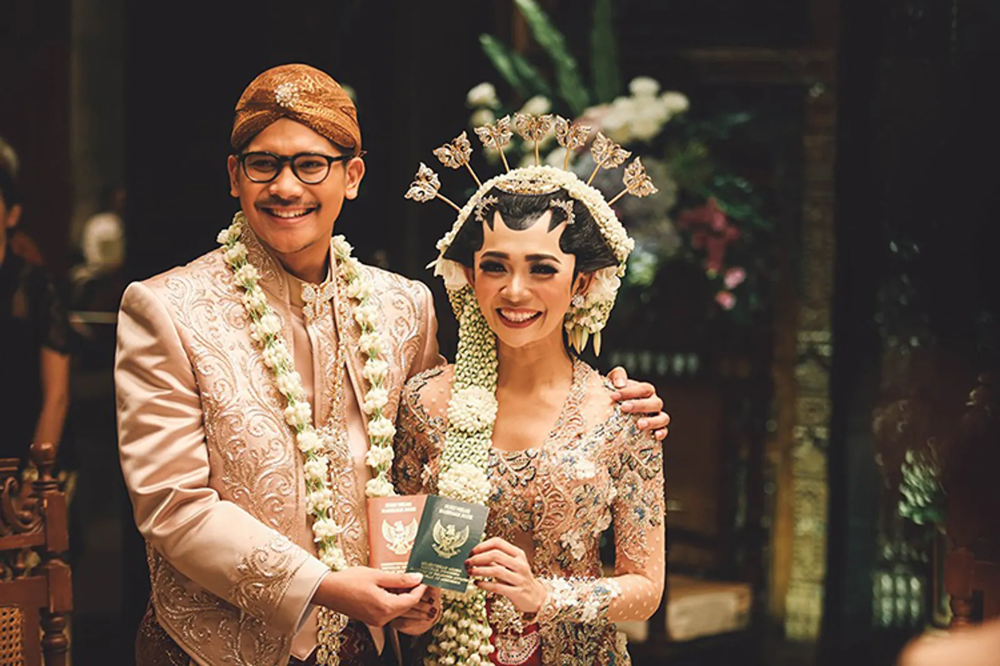

Pernikahan Tradisional
Pernikahan tradisional adalah jenis pernikahan yang mengikuti adat dan tradisi yang telah turun-temurun dalam suatu masyarakat. Pernikahan ini biasanya melibatkan ritual-ritual dan upacara-upacara yang telah ditentukan oleh adat dan tradisi.
- Mengikuti adat dan tradisi yang telah turun-temurun
- Melibatkan ritual-ritual dan upacara-upacara yang telah ditentukan
- Lebih formal dan sakral
- Menghormati budaya dan tradisi